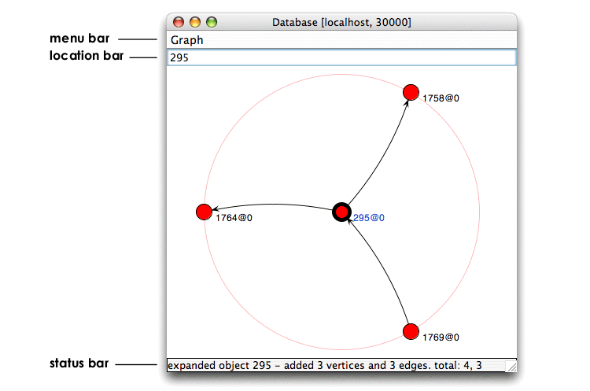

To complement the exploration capabilities available in the Proximity Database Browser, Proximity also provides a way to visualize data graphically. The graphical data browser lets you interactively explore and visualize the local neighborhood of a selected object.
Exercise 4.4. Exploring data with the graphical data browser:
Before beginning, make sure that you are serving the ProxWebKB database using Mserver. Start the Proximity Database Browser if it is not already running.
-
Display the details for object 295.
From the Proximity Database Browser start page, either click Objects then click Next and choose object 295, or enter
item:/objects/295in the location bar. -
Click graph. Proximity opens a new window displaying a graph of object 295 and its immediate neighbors.
 The initial graph display shows the expansion of the start object to show the object and its immediate neighbors, labeled with their object IDs. In this example, the start object, object 295, is linked to three neighbors: objects 1758, 1764, and 1769.
The graph visualization window includes its own location bar at the top of the window and a status bar at the bottom of the window. Enter an object’s ID to visualize the immediate neighborhood around that object. The location bar displays the ID of the most recently expanded object—in this example it indicates that we are displaying the local neighborhood of object 295.
The status bar reports the results of the most recent expansion—that expanding object 295 adds three new objects and three new links for a total of four objects and three links.
-
Set the display preferences for the graph. Display options determine
-
labels for nodes in the graph
-
labels for links in the graph
-
the color of nodes in the graph
-
whether to use of animation when updating the graph (enabled by default)
Labels and colors are based on the attribute values and OIDs of the displayed items:
-
From the Graph menu, choose Set Object Colors. Proximity opens the Choose Attribute dialog.
-
Choose pagetype from the list of attributes and click Set. Proximity updates the node colors in the graph.
-
From the Graph menu, choose Show Color Legend. Proximity displays a key that illustrates how node color maps to pagetype.
-
To change the graph’s object labels, choose Set Object Labels from the Graph menu. You can label the objects with the object’s OID, label objects with the value of a selected attribute, or choose to use no object labels.

Although we do not do so as part of this exercise, you can also add and remove labels for the links in the graph. Like node labels, link labels can use either the link’s ID number or the value of a selected attribute.
-
-
Click the node for object 1758.
Proximity expands this node to show you some of the objects linked to object 1758.

Notice that the location bar has been updated to show you the most recently expanded object. Nodes that have previously been expanded are marked by a medium-weight black outline. The most recently expanded node is marked by a thick black outline and a blue label.
One of the newly added nodes is a proxy node. Proxy nodes are colored gray and labeled with a percentage that indicates how many of the neighboring nodes it represents. In this case, object 1758 is linked to 119 neighboring objects, of which 5 are currently shown in the graphing window. (The 5 linked objects include the 4 objects on the outside circle and object 295 in the center of the graph.) An additional 114 objects linked to object 1758 are not shown, so the proxy node reports that 95.80% (or 114 out of 119) of object 1758’s neighbors are not displayed.
-
To show more objects linked to object 1758, click the gray proxy node on the outside circle.
Proximity displays six additional objects linked to object 1758. Because Proximity redraws the graph after each expansion, nodes and links may change position after you expand an object or proxy node.
Expanding either an object or proxy node normally adds up to six additional nodes to the graph. New nodes are selected from the remaining (undisplayed) objects linked to the expanded node. Expanding a proxy node that represents more than six objects produces a display containing another proxy node representing the remaining unexpanded objects. You can continue clicking each new proxy node to display additional neighboring objects.
-
Right-click (Ctrl-click for Mac OS X) the node for object 1758. Proximity displays a context menu for the selected node. Choose Move to center.

Proximity redraws the graph, placing the selected node in the center. Re-centering a graph can make it easier to understand the immediate neighborhood around an object. In this example, by placing object 1758 in the center, we can more easily see that object 295 is part of object 1758’s immediate neighborhood, and that it has the same pagetype as object 1758’s other neighbors.
After a couple of expansions to the proxy node representing object 1758’s unshown neighbors, the graph shows that the web page represented by object 1758 is linked to a large number of faculty and research project pages. We might therefore suspect that object 1758 represents some type of main page or directory listing. We test this suspicion in the next step.
![[Tip]](images/tip.png)
If the graph display becomes crowded, hover the mouse over any node or link to display a tool tip containing that item’s OID.
-
Right-click the node for object 1758 and choose Browse object attributes from the context menu.
Proximity opens a new Proximity Database Browser window that shows the attribute values for object 1758. The URL for this page contains only the domain, suggesting that object 1758 indeed represents a home page for a computer science department.
The context menu also provides a Browse object menu option. Choosing Browse object opens a new Proximity Database Browser window that displays the main object page (i.e., the list of linked objects) for the selected object.
-
Continue exploring the data with the graphical data browser. To explore a new object’s neighborhood, enter the object’s ID number in the graphical data browser’s location bar. Alternately, if the new object is currently visible in the graphical data browser, you can right-click the new object and choose Restart from vertex. When you are finished, continue to the next section.
You can also start the graphical data browser from the Proximity Database Browser start page:
-
Click Home to return to the Proximity Database Browser start page.
-
Click graph. Proximity displays the graphical data browser, but without graphing any object’s neighborhood.
-
Type the number of the object to explore in the graphical data browser’s location bar and press Return. Proximity displays the object and its immediate neighborhood.